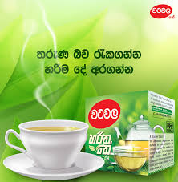

SRI LANKAN TEA MANUFACTURERS
Lipton
Lipton is a British brand of tea, owned by Unilever. Lipton was also a supermarket chain in the United Kingdom, later sold to Argyll Foods, after which the company sold only tea. The company is named after its founder Sir Thomas Lipton. The Lipton ready-to-drink beverages are sold by Pepsi Lipton International, a company jointly owned by Unilever and PepsiCo.
Visit the Lipton Tea official website
Dilmah

Dilmah is a Sri Lankan brand of tea, sold internationally.[1] The company was founded in 1988 by Merrill J Fernando. The name Dilmah was chosen by combining the first names of Fernando's sons Dilhan and Malik. It is available in over 100 countries, including Estonia, the United Kingdom, Turkey, Lithuania, Pakistan, Poland, Russia, Hungary, Canada, Chile, South Africa, Australia, Indonesia, Japan, the United States, Saudi Arabia, Switzerland and New Zealand. In 2009 it was considered that Dilmah was the sixth-largest tea brand in the world.
Visit the Dilmah Tea official website
Zenith
Zenith Tea are dedicated to marketing world renowned Pure Organic Ceylon Black & Green Teas. Complimented with the Herbal & Berry Infusions designed and developed by Bistrotea at the foot of the Alps in Munich, Germany, make Zenith world-class.
Our product portfolio has revolutionized a centuries-old beverage industry, adding value to the communities worldwide.
Visit the Zenith Tea official website
Bogawanthalawa
The majority of tea estates in the area are managed by Bogawantalawa Tea Estates Ltd (BPL Teas). The prominence of the name of the company may have helped the erroneous spelling and name of the town.
Bogawantalawa Tea Estates PLC engages in the cultivation, processing, manufacture, and sale of tea. The company's products include black, green, white, herbal, organic, and flavored teas. It offers its products in the form of string and tea bags, as well as in tins and wooden boxes. The company was formerly known as Bogawantalawa Plantations Limited and changed its name to Bogawantalawa Tea Estates PLC in April 2008. The company was incorporated in 1992 and is based in Colombo, Sri Lanka. Bogawantalawa Tea Estates PLC is a subsidiary of Metropolitan Resource Holdings PLC.
BPL Teas is the largest Sri Lankan supplier of iced tea to the USA. Since 2004, Walters Bay-BPL Teas has continuously received the best iced tea award at the World Tea Expo.
BPL Teas develops products for private labels in addition to exporting their products under the brand Ceylon Tea Gardens.
Visit The Bogawanthalawa Tea official website
Zesta
Ceylon Tea is one of the most sought after teas in the world. Echoing and preserving Ceylon tea's 150-year proud heritage, Zesta is the flagship tea brand of Watawala Tea Ceylon Ltd. It was launched in 1998 with the commitment to offer the best cup of Ceylon tea to consumers around the world.
Visit the Zesta official website
Watawala

Our journey began in 1992 when the government of Sri Lanka decided to privatize the “Management” of the then existing 22 Regional Plantation Companies which consisted of Tea, Rubber, Coconut & Palm Oil. This paved the path for a strategic joint venture between Watawala Plantations PLC and Tata Tea Ltd. of India.
Visit the Watawala official website
More Flavored Tea
More Tea Flavours